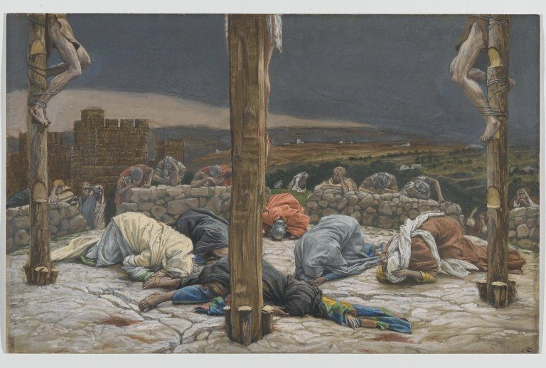

Hebrews 10 — The Mister Translation

⚠ Tissot paints the moment of Jesus’ death, when ‘the curtain of the sanctuary was torn in two’ (Matthew 27:51): the offering of ‘the body of Jesus Christ once for all’ (verse 10), and the way opened ‘through the curtain, that is, his flesh’ (verse 20).
_-_James_Tissot.jpg){kind=link}
Translator’s Notes
“For the law, having a shadow of the good things to come and not the very image of the things, can never … make complete those who draw near.” “Shadow” picks up “a copy and shadow” at Hebrews 8:5 (dictionary); “the good things to come” is the reading Tregelles and Robinson–Pierpont give at Hebrews 9:11. “Image” is eikōn, the word of Colossians 1:15, “the image of the invisible God” (dictionary): not a second copy but the thing itself. “For all time” is eis to diēnekēs, as at Hebrews 7:3 (dictionary); “make complete” is the verb of Hebrews 9:9; “those who draw near” is the verb of Hebrews 4:16. The printed text has “the law … can,” with Nestle–Aland 28; Westcott–Hort, Tregelles and Robinson–Pierpont have “they can,” the priests (the apparatus). The KJV reads “For the law having a shadow of good things to come, and not the very image of the things”; the NWT 1984 reads “but not the very substance of the things”; the NIV reads “The law is only a shadow of the good things that are coming.”
“Since those who serve, once cleansed, would no longer have any conscience of sins … But in them there is a remembrance of sins year by year.” “Those who serve” are the worshipers of Hebrews 9:9, whose conscience the sacrifices could not make complete (dictionary). Anamnēsis, “remembrance,” stands in four verses: three are the cup and the bread, “Do this in remembrance of me” (Luke 22:19, 1 Corinthians 11:24, 11:25), and the fourth is this remembrance of sins (dictionary). The KJV reads “because that the worshippers once purged should have had no more conscience of sins”; the ASV reads “would have had no more consciousness of sins”; the Douay reads “But in them there is made a commemoration of sins every year.”
“For it is impossible for the blood of bulls and goats to take away sins.” The bulls and goats are those of Hebrews 9:12 and 9:13, and of the Day of Atonement. “Impossible” is the word of Hebrews 6:4 and 6:18, now said of the sacrifices themselves. “Take away” is aphaireō, the verb of “when I take away their sins” at Romans 11:27. The ASV reads “For it is impossible that the blood of bulls and goats should take away sins”; the Douay reads “with the blood of oxen and goats”; the NWT 1984 reads “for it is not possible for the blood of bulls and of goats to take sins away.”
⚠ “Sacrifice and offering you did not want, but a body you prepared for me.” The quotation is Psalm 40:6–8, 40:7–9 in the Hebrew numbering, in the words of the Greek Psalter, where it is 39:7–9. The Hebrew reads oznayim karita li, “ears you have dug for me” (checked): ears opened to hear and obey. The Greek has “a body you prepared for me” (checked), and Hebrews builds its argument on that line in verse 10, “the offering of the body of Jesus Christ.” How the Greek came to read “body” is explained in more than one way (reported, not checked here); this page reports the difference and does not settle it. “Prepared” is katartizō (dictionary). The KJV reads “but a body hast thou prepared me”; the Geneva reads “but a body hast thou ordained me”; the Douay reads “but a body thou hast fitted to me.”
“In whole burnt offerings and offerings for sin you took no pleasure. Then I said, ‘Look, I have come — in the roll of the book it is written of me — to do your will, O God.’” Where the Greek Psalter has “you did not ask,” Hebrews has “you took no pleasure” (checked), and it ends the line at “to do your will, O God,” leaving out the Psalm’s “I delighted” and “your law within my heart.” Holokautōma, “whole burnt offering,” stands in three verses: the scribe’s “more than all whole burnt offerings and sacrifices” at Mark 12:33, and verses 6 and 8 here (dictionary). Kephalis, “roll,” stands in one verse; it names the knob at the end of a scroll’s rod, and so the scroll (dictionary). The KJV reads “in the volume of the book it is written of me”; the ASV reads “In the roll of the book it is written of me”; the Douay reads “in the head of the book it is written of me.”
“He takes away the first in order to establish the second. By that will we have been sanctified through the offering of the body of Jesus Christ once for all.” “Takes away” is anaireō, which in Acts is the regular word for doing away with a person, as in “Do you want to kill me the way you killed the Egyptian yesterday?” (Acts 7:28). “The first” and “the second” are the sacrifices the Psalm sets aside and the will of God it chooses, as with the two covenants of Hebrews 8:7. “Once for all” is the ephapax of Hebrews 9:12 (dictionary). Robinson–Pierpont adds “O God” in verse 9 (the apparatus). The KJV reads “He taketh away the first, that he may establish the second”; the NWT 1984 reads “He does away with what is first that he may establish what is second”; the Douay reads “we are sanctified by the oblation of the body of Jesus Christ once.”
“And every priest stands day by day ministering and offering again and again the same sacrifices, which can never remove sins. But this one, having offered one sacrifice for sins for all time, sat down at the right hand of God.” The priests stand; this one sits. “Remove” is periaireō, a different verb from the “take away” of verse 4. “For all time” can go with “one sacrifice” or with “sat down”; the shelf divides, and this page does not choose. Robinson–Pierpont has “But he” (the apparatus). The KJV reads “after he had offered one sacrifice for sins for ever, sat down on the right hand of God”; the Douay reads “But this man offering one sacrifice for sins, for ever sitteth on the right hand of God”; the NIV reads “But when this priest had offered for all time one sacrifice for sins.”
“From then on waiting until his enemies are made a footstool for his feet. For by one offering he has made complete for all time those who are being sanctified.” The footstool is Psalm 110:1, quoted at Hebrews 1:13 and by Peter at Acts 2:35; hypopodion, “footstool,” stands in seven verses (dictionary). “Made complete” is the verb of Hebrews 9:9 and of verse 1, now done. “Those who are being sanctified” is a present participle, as at Hebrews 2:11. The ASV reads “henceforth expecting till his enemies be made the footstool of his feet”; the KJV reads “For by one offering he hath perfected for ever them that are sanctified”; the NIV reads “those who are being made holy.”
“And the Holy Spirit also testifies to us; for after saying, ‘This is the covenant that I will covenant with them …’ then: ‘And their sins and their lawless deeds I will remember no more.’” The quotation of Hebrews 8:10 and 8:12 returns, shortened, with “hearts” and “minds” changing places and “their lawless deeds” added (dictionary). The Greek says “after saying” and leaves the second “he says” unstated; this translation supplies “then,” and the editions differ over where the break falls. “Says Jehovah” is the Hebrew ne’um YHVH of Jeremiah 31:32, with kyrios in the Greek. Robinson–Pierpont has “said before” in verse 15 (the apparatus). The ASV reads “And upon their mind also will I write them; then saith he,”; the NIV reads “Then he adds”; the KJV reads “And their sins and iniquities will I remember no more.”
“Now where there is forgiveness of these, there is no longer an offering for sin.” “Forgiveness” is the aphesis of Hebrews 9:22, “without the shedding of blood there is no forgiveness” (dictionary); “offering” is prosphora, the word of verses 5, 8, 10 and 14 (dictionary). The KJV reads “Now where remission of these is, there is no more offering for sin”; the NWT 1984 reads “Now where there is forgiveness of these”; the NIV reads “sacrifice for sin is no longer necessary.”
“Having boldness for the entrance into the sanctuary by the blood of Jesus, by the new and living way that he inaugurated for us through the curtain, that is, his flesh.” “Boldness” is the parrēsia of Hebrews 3:6 and 4:16 (dictionary). “The way” is the one “not yet revealed” at Hebrews 9:8; “inaugurated” is the verb of Hebrews 9:18 (dictionary). Prosphatos, “new,” stands in one verse; its parts once meant “freshly slain” (reported, not checked here), and in ordinary use it means recent (dictionary). “Through the curtain” recalls the curtain torn “from top to bottom” at Matthew 27:51. Readers take “that is, his flesh” with “the curtain,” so that his flesh is the curtain, or with “the way”; this page does not choose. The KJV reads “By a new and living way, which he hath consecrated for us, through the veil, that is to say, his flesh”; the NWT 1984 reads “which he inaugurated for us as a new and living way through the curtain, that is, his flesh”; the NIV reads “through the curtain, that is, his body.”
“And having a great priest over the house of God, let us draw near with a true heart in full assurance of faith, our hearts sprinkled clean from an evil conscience and our bodies washed with pure water.” “Over the house of God” is the Son of Hebrews 3:6. “Full assurance” is the plērophoria of Hebrews 6:11 (dictionary). “Sprinkled” is the verb of Hebrews 9:13, there of the defiled, here of hearts (dictionary). Readers take “bodies washed with pure water” as baptism, or as an image drawn from the washings of the priests; this page does not choose. The KJV reads “Let us draw near with a true heart in full assurance of faith”; the NWT 1984 reads “having had our hearts sprinkled from a wicked conscience”; the ASV reads “and having our body washed with pure water.”
“Let us hold fast the confession of our hope unwavering, for he who promised is faithful.” “Confession” is the homologia of Hebrews 3:1 and 4:14 (dictionary). Aklinēs, “unwavering,” stands in one verse (dictionary). The Greek has “hope,” and the KJV has “faith.” “He who promised is faithful” looks back to the promise and the oath of Hebrews 6:13. The KJV reads “Let us hold fast the profession of our faith without wavering”; the ASV reads “let us hold fast the confession of our hope that it waver not”; the NIV reads “Let us hold unswervingly to the hope we profess.”
“And let us consider one another, to stir one another up to love and good works, not abandoning our own gathering together, as is the habit of some, but encouraging one another, and all the more as you see the day drawing near.” Paroxysmos stands in two verses: the “sharp disagreement” of Paul and Barnabas at Acts 15:39, and here, where the stirring is to love (dictionary). Episynagōgē, “gathering together,” stands in two verses: “our being gathered together to him” at 2 Thessalonians 2:1, and here (dictionary); it is not the word ekklēsia. “Abandoning” is enkataleipō, the verb of “why have you forsaken me?” at Matthew 27:46. “Drawing near” is the verb of Hebrews 7:19. The KJV reads “Not forsaking the assembling of ourselves together, as the manner of some is”; the NWT 1984 reads “not forsaking the gathering of ourselves together”; the TLB reads “Let us not neglect our church meetings,” with a word the Greek does not use.
⚠ “For if we go on sinning willfully after receiving the knowledge of the truth, there no longer remains a sacrifice for sins.” “Sinning” is a present participle, a sin that continues. Hekousiōs, “willfully,” stands in two verses, here and 1 Peter 5:2 (dictionary). The Law distinguishes sin “through error” (Leviticus 4:2) from the sin done “with a high hand,” for which it names no sacrifice (Numbers 15:30). Traditions read the verse as they read Hebrews 6:4–6: of a deliberate turning away from Christ, of which verse 29 is the description; of believers who can fall beyond return; or as a warning meant to keep that from happening. This page does not choose. The KJV reads “For if we sin wilfully after that we have received the knowledge of the truth”; the NIV reads “If we deliberately keep on sinning”; the NWT 1984 reads “For if we practice sin willfully.”
“But a fearful expectation of judgment and a zeal of fire that is about to consume the adversaries.” Ekdochē, “expectation,” stands in one verse (dictionary). “A zeal of fire … the adversaries” are the words of the Greek of Isaiah 26:11, “zeal will take hold of an untaught people, and now fire will consume the adversaries” (checked). Hypenantios, “adversary,” stands in two verses, here and the bond “which was opposed to us” at Colossians 2:14. The ASV reads “and a fierceness of fire which shall devour the adversaries”; the NWT 1984 reads “a fiery jealousy that is going to consume those in opposition”; the NIV reads “and of raging fire that will consume the enemies of God.”
“Anyone who has set aside the law of Moses dies without mercy on the word of two or three witnesses. How much worse a punishment … will be deserved by the one who has trampled the Son of God underfoot, and has counted common the blood of the covenant by which he was sanctified, and has insulted the Spirit of grace?” “Set aside” is the verb of the athetēsis of Hebrews 7:18 (dictionary). “Two or three witnesses” is Deuteronomy 17:6. Katapateō, “to trample,” stands in four verses, among them the pearls the swine “trample under their feet” at Matthew 7:6. “Common” is koinos, Peter’s word for unclean food at Acts 10:14; “the blood of the covenant” is the phrase of Exodus 24:8 and Hebrews 9:20. Enybrizō, “to insult,” stands in one verse (dictionary), and so does timōria, “punishment” (dictionary). The ASV reads “dieth without compassion on the word of two or three witnesses”; the KJV reads “and hath counted the blood of the covenant, wherewith he was sanctified, an unholy thing”; the NWT 1984 reads “the spirit of undeserved kindness,” with “spirit” lower-cased, in keeping with its teaching that the spirit is God’s active force.
“For we know the one who said, ‘Vengeance is mine; I will repay,’ and again, ‘Jehovah will judge his people.’ It is a fearful thing to fall into the hands of the living God.” Both lines are from the Song of Moses. “Vengeance is mine” follows the Hebrew of Deuteronomy 32:35, li naqam, “Vengeance is mine, and recompense”; the Greek of Deuteronomy has “In the day of vengeance I will repay” (both checked). Antapodōsō, “I will repay,” stands in two verses, here and Romans 12:19, where Paul quotes the line in the same form. “Jehovah will judge his people” is Deuteronomy 32:36, word for word in the Greek (checked), where the Hebrew goes on, “and he will relent concerning his servants.” Robinson–Pierpont adds “says the Lord” (the apparatus). The KJV reads “Vengeance belongeth unto me, I will recompense, saith the Lord”; the NIV reads “It is mine to avenge; I will repay”; the NWT 1984 reads “Jehovah will judge his people.”
“But remember the former days, in which, after you were enlightened, you endured a great contest of sufferings, sometimes made a public spectacle by insults and afflictions, and sometimes becoming partners with those who were so treated.” “Enlightened” is the word of Hebrews 6:4. Athlēsis, “contest,” an athlete’s word, stands in one verse (dictionary). Theatrizō, “to make a public spectacle,” also stands in one verse; its noun is the “spectacle” Paul says the apostles became at 1 Corinthians 4:9 (dictionary). The KJV reads “after ye were illuminated, ye endured a great fight of afflictions”; the NWT 1984 reads “while YOU were being exposed as in a theater both to reproaches and tribulations”; the ASV reads “partly, becoming partakers with them that were so used.”
“For you sympathized with the prisoners, and you accepted with joy the plundering of your belongings, knowing that you yourselves have a better possession, and an abiding one.” “Sympathized” is the verb of Hebrews 4:15, “a high priest who is unable to sympathize” (dictionary). Robinson–Pierpont has “with my bonds,” which gives the writer a prisoner’s voice, and adds “in the heavens” (the apparatus); the KJV follows both. Hyparxis, “possession,” stands in two verses, the “belongings” sold at Acts 2:45 and here (dictionary). The KJV reads “For ye had compassion of me in my bonds”; the ASV reads “For ye both had compassion on them that were in bonds”; the NIV reads “joyfully accepted the confiscation of your property.”
“So do not throw away your boldness, which has a great recompense. For you have need of endurance, so that when you have done the will of God you may receive what was promised.” “Boldness” is the word of verse 19. “Recompense” is the misthapodosia of Hebrews 2:2 (dictionary). “Endurance” is hypomonē, as in “By your endurance, gain your souls” at Luke 21:19 (dictionary). “Receive what was promised” is what the faithful of Hebrews 11:39 did not do. The KJV reads “Cast not away therefore your confidence, which hath great recompence of reward”; the NWT 1984 reads “Do not, therefore, throw away YOUR freeness of speech”; the NIV reads “You need to persevere.”
⚠ “For yet a very little while, and the one who is coming will come and will not delay; but my righteous one will live by faith, and if he shrinks back, my soul takes no pleasure in him.” “A very little while” is the Greek of Isaiah 26:20, mikron hoson hoson (checked). The rest is Habakkuk 2:3–4, changed in three ways from the Greek of Habakkuk (checked): the Greek has “coming, it will come,” of the vision, and Hebrews adds the article, “the one who is coming”; the Greek has “the righteous will live by my faith,” and Hebrews has “my righteous one … by faith”; and Hebrews puts the two halves of verse 4 in the opposite order. The Hebrew has tsaddiq be’emunato yichyeh, “the righteous will live by his faithfulness” (checked). Paul quotes the line without a pronoun at Romans 1:17 and Galatians 3:11. Robinson–Pierpont omits “my” (the apparatus). The ASV reads “For yet a very little while, He that cometh shall come, and shall not tarry”; the KJV reads “Now the just shall live by faith”; the NWT 1984 reads “my righteous one will live by reason of faith.”
“But we are not of those who shrink back to destruction, but of those who have faith to the preserving of the soul.” “Shrink back” is hypostellō, the verb of Peter who “began to shrink back” at Galatians 2:12 (dictionary); its noun hypostolē stands in one verse, here (dictionary). “Destruction” is apōleia (dictionary). Peripoiēsis, “preserving,” stands in five verses, among them “obtaining salvation” at 1 Thessalonians 5:9 (dictionary). The chapter’s last word, “faith,” opens chapter 11. The KJV reads “But we are not of them who draw back unto perdition; but of them that believe to the saving of the soul”; the NWT 1984 reads “but the sort that have faith to the preserving alive of the soul”; the NIV reads “but to those who have faith and are saved.”
Patterns worth carrying forward
Where this translation keeps the exact words: “shadow” and “image”; “for all time,” as at 7:3; “make complete”; “those who serve”; “remembrance,” the word of the Lord’s Supper; “a body you prepared for me,” with the Hebrew “ears” in the note; “roll”; “takes away” and “remove,” two verbs kept apart; “sat down”; “footstool”; “says Jehovah”; “boldness,” as at 3:6; “inaugurated,” as at 9:18; “sprinkled”; “confession” and “hope”; “gathering together,” not “church”; “willfully”; “set aside,” as at 7:18; “common”; “Jehovah will judge his people”; “enlightened,” as at 6:4; “recompense,” as at 2:2; “endurance”; “my righteous one”; and “shrink back.”
Echoes paid. The shadow of Hebrews 8:5; for all time from Hebrews 7:3; the bulls and goats of Hebrews 9:13; once for all from Hebrews 9:12; the footstool of Hebrews 1:13; Jeremiah’s covenant from Hebrews 8:10; forgiveness from Hebrews 9:22; boldness from Hebrews 3:6; the way of Hebrews 9:8; inaugurated from Hebrews 9:18; draw near from Hebrews 4:16; sprinkled from Hebrews 9:13; full assurance from Hebrews 6:11; the confession of Hebrews 3:1; set aside from Hebrews 7:18; the blood of the covenant of Hebrews 9:20; the living God of Hebrews 3:12; enlightened from Hebrews 6:4; sympathize from Hebrews 4:15; and the recompense of Hebrews 2:2.
Echoes planted. “Faith,” the last word of the chapter, as the subject of chapter 11; “endurance” at 12:1; the “living God” again at 12:22; and the prisoners remembered at 13:3.
Next in this book: Hebrews 11, already on these pages. “Faith is the assurance of things hoped for”: Abel, Enoch, Noah, Abraham and Sarah, Moses and the rest, who all “did not receive what was promised.”